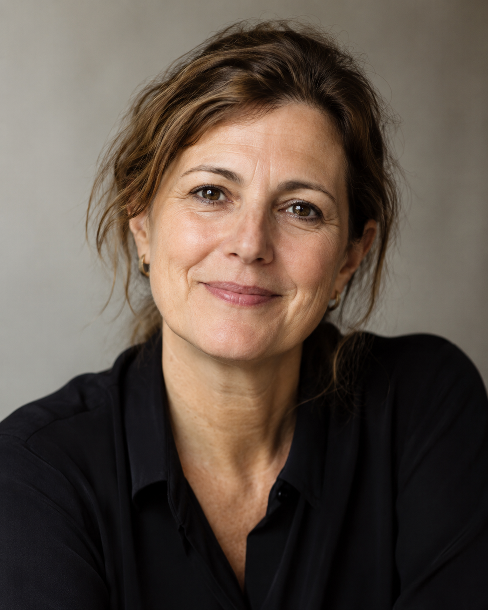

Anne Sophie Martens
J’ai appris le don conscient de mon père. Pour moi, donner c’est vivre — que ce soit élever nos enfants, aider mes mamans ou soutenir mon mari. C’est tout simplement inscrit dans mon corps. Cela laisse des traces dans l’encre de mes veines. Lors de mes séjours dans les bidonvilles, j’ai aussi été profondément touchée par tout ce que cela peut représenter pour une autre personne d’être simplement présent, d’écouter sans jugement et de s’ouvrir à d’autres résonances de la vie. Qu’est-ce que j’en reçois en retour ? Guérison, connaissance de soi, enrichissement, accomplissement à l’infini — pour lesquels je suis tellement reconnaissante. Cela remplit à nouveau mes veines de la couleur de l’amour.